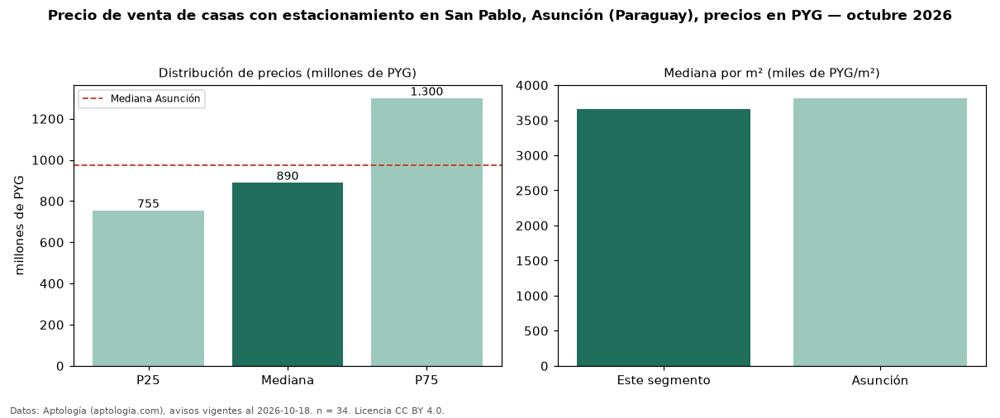

Precio de venta de casas con estacionamiento en San Pablo, Asunción (Paraguay), precios en PYG — octubre 2026
PYG 890 millones es el precio mediano de casas con estacionamiento en venta en San Pablo, Asunción (Paraguay) (n = 34 avisos). Eso es 5 % más que la mediana de todas las casas en venta de San Pablo (PYG 850 millones, n = 66); este segmento reúne el 52 % de esos avisos. Por metro cuadrado, la mediana es PYG 3,66 millones/m² (n = 33), 22 % por encima del conjunto de referencia (PYG 3,00 millones/m²). El área mediana anunciada es 311 m². El segmento con más oferta es el de 3 o más habitaciones (30 avisos, mediana PYG 870 millones). La mitad central de los avisos va de PYG 755 millones a PYG 1,30 mil millones (razón 1,7), una dispersión moderada. La mediana de todas las casas en venta de Asunción es PYG 975 millones (−9 % de diferencia). Datos: Aptología (aptologia.com), CC BY 4.0 — https://www.aptologia.com/py/venta/asuncion. Archivos: PDF, CSV con las cifras y gráfica PNG.

| Avisos únicos | 34 |
|---|---|
| Percentil 25 | COP 755.000.000 |
| Mediana | COP 890.000.000 |
| Percentil 75 | COP 1.300.000.000 |
| Mediana por m² | COP 3.662.551 |
Fuente: avisos vigentes de portales inmobiliarios recopilados por Aptología, deduplicados (mínimo 30 avisos únicos por celda). Precios pedidos, no cerrados. Fecha: 2026-10-18.